<title>Centred Landing Box</title>
<meta name="claude:viewport-fit-sides" content="cover">
<link rel="stylesheet" href="https://fonts.googleapis.com/css2?family=Outfit:wght@350;450;560;650&display=swap">
<style>
:root {
  --font: "Outfit", ui-sans-serif, system-ui, -apple-system, "Segoe UI", Roboto, sans-serif;
  --bg: #EEF0FF; --card: #FFFFFF; --ink: #14112B; --muted: #4A4670; --line: #C9CBEA; --accent: #4A17B8; --on-accent: #FFFFFF; --soft: #E4E2FF; --code: #E9E8FB;
}
@media (prefers-color-scheme: dark) { :root:not([data-theme="light"]) { --bg: #0B0C22; --card: #14163A; --ink: #F3F1FF; --muted: #C9C6EA; --line: #3A3D78; --accent: #CDB9FF; --on-accent: #10082B; --soft: #26235E; --code: #1F2150; color-scheme: dark; } }
:root[data-theme="dark"] { --bg: #0B0C22; --card: #14163A; --ink: #F3F1FF; --muted: #C9C6EA; --line: #3A3D78; --accent: #CDB9FF; --on-accent: #10082B; --soft: #26235E; --code: #1F2150; color-scheme: dark; }
body { background: var(--bg); color: var(--ink); font-family: var(--font); font-size: 16px; line-height: 1.55; }
.wrap { max-width: 1180px; margin: 0 auto; padding-block: 32px 72px; padding-left: max(16px, env(safe-area-inset-left, 0px)); padding-right: max(16px, env(safe-area-inset-right, 0px)); display: grid; grid-template-columns: minmax(0, 1fr); gap: 40px; }
.wrap > * { min-width: 0; }
h1 { font-size: clamp(32px, 6vw, 48px); line-height: 1.08; letter-spacing: -.03em; font-weight: 350; margin: 0; text-wrap: balance; }
h2 { font-size: 26px; letter-spacing: -.02em; font-weight: 450; margin: 0 0 14px; }
h3 { font-size: 21px; font-weight: 560; margin: 0; letter-spacing: -.01em; }
p { margin: 0; } code { font-family: ui-monospace, SFMono-Regular, Menlo, Consolas, monospace; font-size: .88em; background: var(--code); padding: 1px 6px; border-radius: 6px; overflow-wrap: anywhere; }
.lede { max-width: 68ch; color: var(--muted); font-size: 18px; margin-top: 12px; }
.bar { position: sticky; top: env(safe-area-inset-top, 0px); z-index: 5; display: flex; flex-wrap: wrap; align-items: center; gap: 10px 16px; padding: 10px 14px; background: var(--card); border: 1px solid var(--line); border-radius: 18px; }
.bar span { color: var(--muted); font-size: 15px; }
.seg { display: inline-flex; padding: 3px; border-radius: 999px; background: var(--soft); }
.seg button { min-height: 44px; min-width: 88px; padding: 0 18px; border: 0; border-radius: 999px; background: transparent; color: var(--ink); font: inherit; font-weight: 560; cursor: pointer; }
.seg button[aria-pressed="true"] { background: var(--accent); color: var(--on-accent); }
.seg button:focus-visible, a:focus-visible { outline: 3px solid var(--accent); outline-offset: 2px; }
.pair { display: grid; grid-template-columns: minmax(0, 3.4fr) minmax(0, 1fr); gap: 16px; align-items: start; }
.ba { display: grid; grid-template-columns: minmax(0, 1fr) minmax(0, 1fr); gap: 16px; align-items: start; }
.ba + .ba { margin-top: 16px; }
.shot { margin: 0; display: grid; gap: 8px; min-width: 0; }
.shot figcaption { font-size: 14px; color: var(--muted); font-weight: 450; }
.shot img { display: block; width: 100%; height: auto; border-radius: 14px; border: 1px solid var(--line); }
.shot.scroll { max-height: 700px; overflow: auto; }
.state { display: grid; gap: 12px; }
.state-head { display: flex; flex-wrap: wrap; align-items: baseline; gap: 4px 16px; }
.reqs { color: var(--muted); font-size: 14px; }
.blurb { max-width: 76ch; }
.files { font-size: 14px; color: var(--muted); }
.table { overflow-x: auto; border: 1px solid var(--line); border-radius: 16px; background: var(--card); }
table { border-collapse: collapse; width: 100%; min-width: 640px; font-size: 15px; }
th, td { text-align: left; vertical-align: top; padding: 10px 14px; border-bottom: 1px solid var(--line); }
thead th { font-weight: 560; color: var(--muted); font-size: 14px; }
tbody th { font-weight: 560; width: 24%; } tr:last-child > * { border-bottom: 0; }
ol, ul.plain { margin: 0; padding-left: 22px; display: grid; gap: 12px; max-width: 80ch; }
@media (max-width: 760px) { .pair, .ba { grid-template-columns: minmax(0, 1fr); } .wrap { gap: 32px; } }
</style>
<main class="wrap">
<header><h1>Centred landing box</h1>
<p class="lede">The home page becomes one large box in the middle of the page, like a new chat in Claude. Type a GPU, or just a VRAM number such as 12 GB, press Enter or pick a suggestion, and you land on the results page you know. <code>Clear</code> brings you back here. This is Gate 2: approve the look of the states below and the three wording changes. These mockups become QA's reference (rule 10).</p></header>
<div class="bar" role="group" aria-label="Screenshot theme"><strong>Screenshots</strong><div class="seg"><button type="button" id="t-light" aria-pressed="true">Light</button><button type="button" id="t-dark" aria-pressed="false">Dark</button></div><span>Every state is mocked up in both themes and at 390 and 1280 px. Click an image to open it in full.</span></div>
<section><h2>Before and after</h2><p class="blurb" style="margin-bottom:16px">Today's <code>/</code> is the results page for an assumed 8 GB. The new <code>/</code> asks one question.</p><div class="ba"><figure class="shot"><figcaption>Today, 1280 px</figcaption>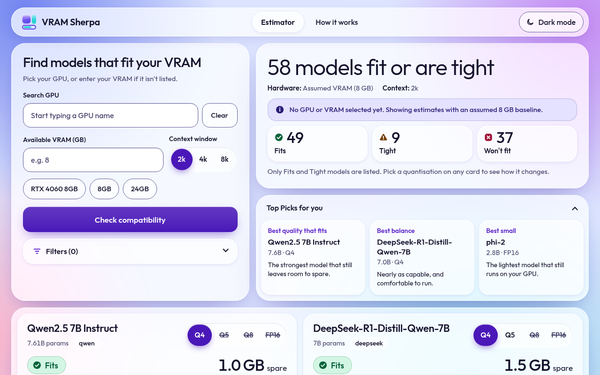</figure><figure class="shot"><figcaption>New, 1280 px</figcaption>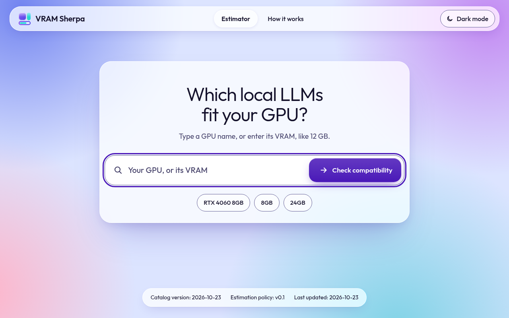</figure></div><div class="ba"><figure class="shot"><figcaption>Today, 390 px</figcaption>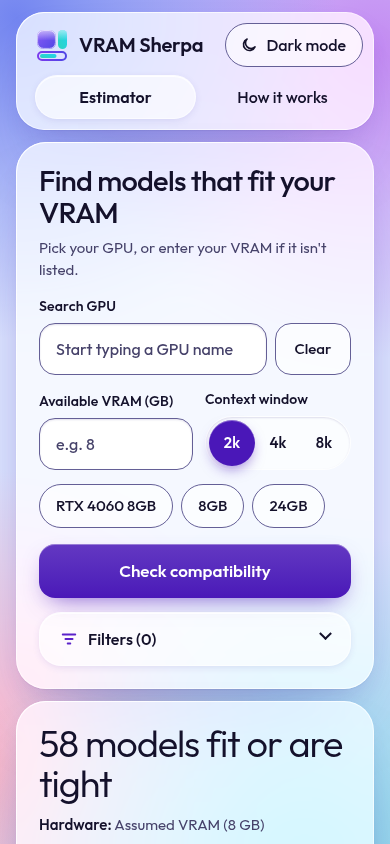</figure><figure class="shot"><figcaption>New, 390 px</figcaption></figure></div></section>
<section><h2>States</h2><div style="display:grid;gap:48px"><section class="state" id="landing-empty"><div class="state-head"><h3>L1. Empty box</h3><p class="reqs">R-083, R-067, R-077</p></div><p class="blurb">What <code>/</code> shows on load: the greeting, the box with keyboard focus already in it, the submit control and the three chips. Nothing else: no results, no <code>Available VRAM (GB)</code>, no context, no filters, no <code>Clear</code>, no assumed-8 GB note.</p><div class="pair"><figure class="shot"><figcaption>1280 px</figcaption><a href="final/landing-empty-1280-light.png" target="_blank" rel="noopener"></a></figure><figure class="shot"><figcaption>390 px</figcaption><a href="final/landing-empty-390-light.png" target="_blank" rel="noopener"></a></figure></div><p class="files">Mockup <code>docs/design/mockups/final-landing-empty.html</code>. Renders <code>docs/design/final/landing-empty-&lt;390|1280&gt;-&lt;light|dark&gt;.png</code>.</p></section><section class="state" id="landing-suggest"><div class="state-head"><h3>L2. Suggestion list open after typing 4060</h3><p class="reqs">R-071, R-083, R-067</p></div><p class="blurb">The styled list of R-071 under the box: the four 4060 GPUs in R-071&#x27;s order, first one highlighted, labels word for word. It replaces <code>gpu-suggest</code> as the reference for <code>/</code>; on <code>/results</code> the list keeps its old look. At 390 px two labels wrap to two lines, as they do on <code>/results</code>.</p><div class="pair"><figure class="shot"><figcaption>1280 px</figcaption><a href="final/landing-suggest-1280-light.png" target="_blank" rel="noopener">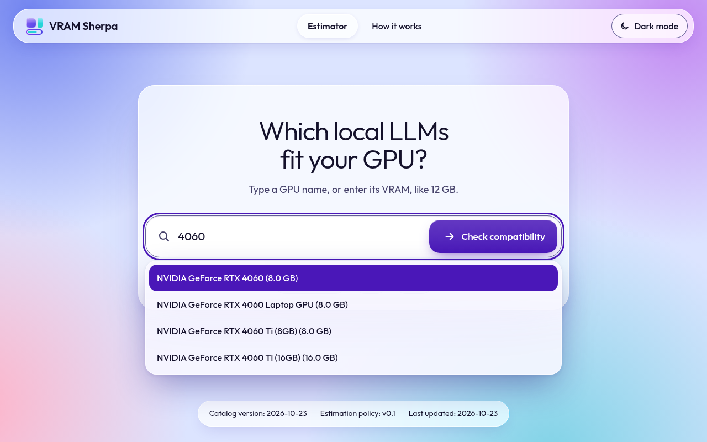</a></figure><figure class="shot"><figcaption>390 px</figcaption><a href="final/landing-suggest-390-light.png" target="_blank" rel="noopener">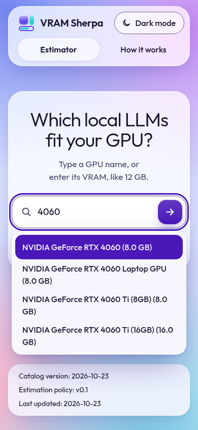</a></figure></div><p class="files">Mockup <code>docs/design/mockups/final-landing-suggest.html</code>. Renders <code>docs/design/final/landing-suggest-&lt;390|1280&gt;-&lt;light|dark&gt;.png</code>.</p></section><section class="state" id="landing-unseeded"><div class="state-head"><h3>L3. Catalog unseeded</h3><p class="reqs">R-026, R-083, R-067</p></div><p class="blurb">The box and, under the chips, the two sentences of R-026 in a status notice. Footer values read <code>unseeded</code>. The <code>Example GPU</code> chip is drawn inert (dashed, not a link) because there is no GPU to bind it to (ADR-0009). See decision 2.</p><div class="pair"><figure class="shot"><figcaption>1280 px</figcaption><a href="final/landing-unseeded-1280-light.png" target="_blank" rel="noopener">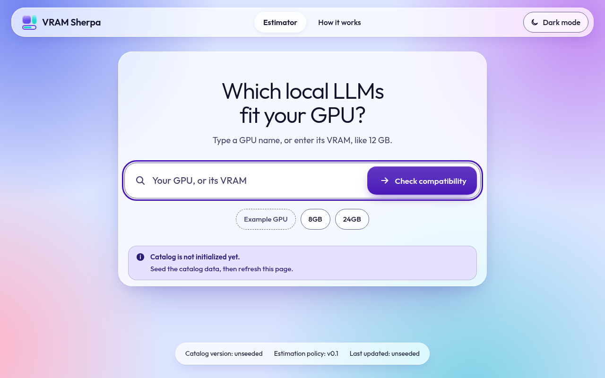</a></figure><figure class="shot"><figcaption>390 px</figcaption><a href="final/landing-unseeded-390-light.png" target="_blank" rel="noopener">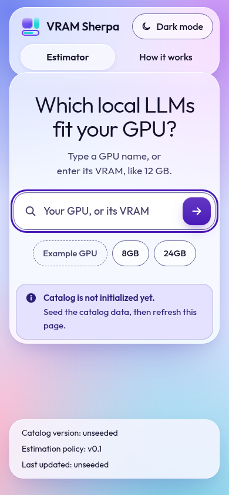</a></figure></div><p class="files">Mockup <code>docs/design/mockups/final-landing-unseeded.html</code>. Renders <code>docs/design/final/landing-unseeded-&lt;390|1280&gt;-&lt;light|dark&gt;.png</code>.</p></section><section class="state" id="landing-focus-box"><div class="state-head"><h3>L4a. Focus on the box</h3><p class="reqs">R-077, R-083, R-067</p></div><p class="blurb">The box with a number typed (<code>12 GB</code>), which is also what a VRAM entry looks like. The 3 px focus ring is the one every field uses.</p><div class="pair"><figure class="shot"><figcaption>1280 px</figcaption><a href="final/landing-focus-box-1280-light.png" target="_blank" rel="noopener">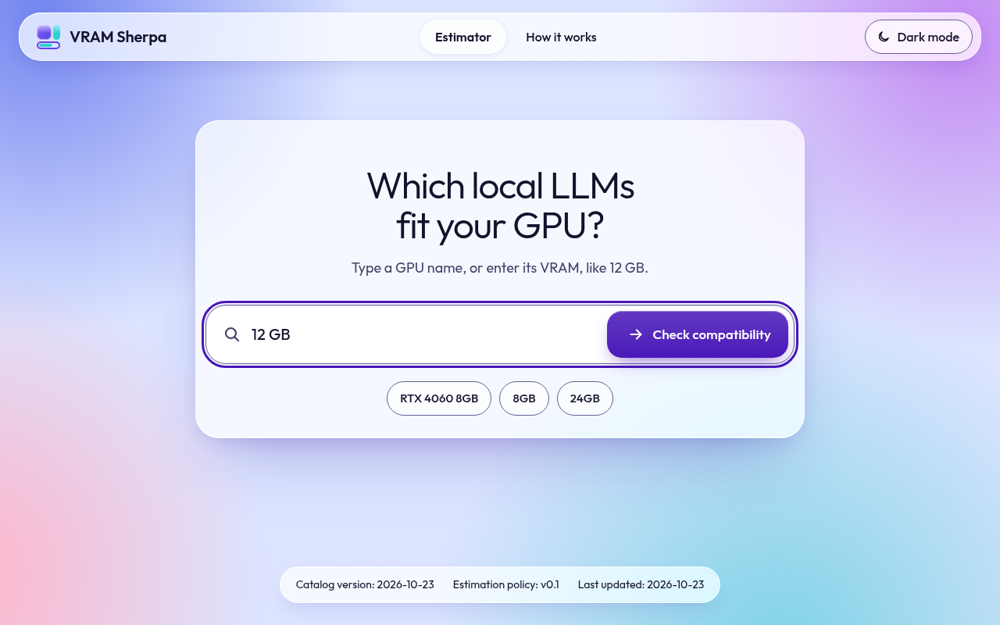</a></figure><figure class="shot"><figcaption>390 px</figcaption><a href="final/landing-focus-box-390-light.png" target="_blank" rel="noopener">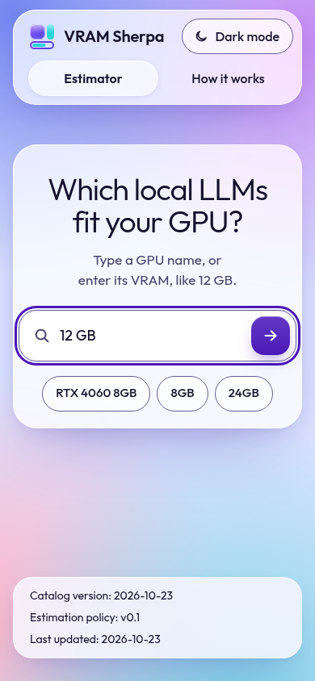</a></figure></div><p class="files">Mockup <code>docs/design/mockups/final-landing-focus-box.html</code>. Renders <code>docs/design/final/landing-focus-box-&lt;390|1280&gt;-&lt;light|dark&gt;.png</code>.</p></section><section class="state" id="landing-focus-chip"><div class="state-head"><h3>L4b. Focus on a chip</h3><p class="reqs">R-077, R-083, R-067</p></div><p class="blurb">Keyboard focus on <code>RTX 4060 8GB</code>. Chips are links; the ring is the same 3 px ring.</p><div class="pair"><figure class="shot"><figcaption>1280 px</figcaption><a href="final/landing-focus-chip-1280-light.png" target="_blank" rel="noopener">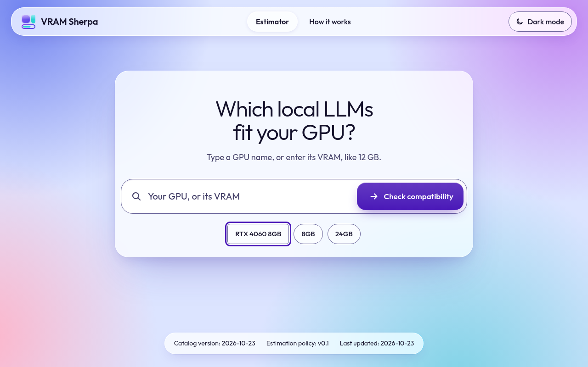</a></figure><figure class="shot"><figcaption>390 px</figcaption><a href="final/landing-focus-chip-390-light.png" target="_blank" rel="noopener">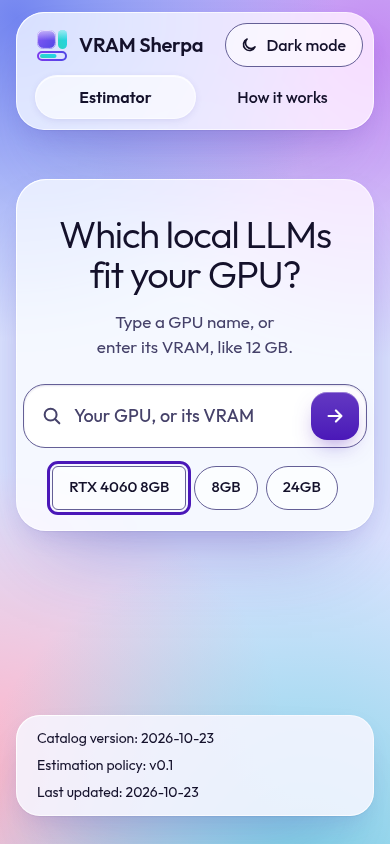</a></figure></div><p class="files">Mockup <code>docs/design/mockups/final-landing-focus-chip.html</code>. Renders <code>docs/design/final/landing-focus-chip-&lt;390|1280&gt;-&lt;light|dark&gt;.png</code>.</p></section><section class="state" id="landing-focus-submit"><div class="state-head"><h3>L4c. Focus on the submit control</h3><p class="reqs">R-077, R-083, R-067</p></div><p class="blurb"><code>Check compatibility</code> focused. At 1280 px it shows its words; at 390 px only the arrow, with the name kept for screen readers.</p><div class="pair"><figure class="shot"><figcaption>1280 px</figcaption><a href="final/landing-focus-submit-1280-light.png" target="_blank" rel="noopener"></a></figure><figure class="shot"><figcaption>390 px</figcaption><a href="final/landing-focus-submit-390-light.png" target="_blank" rel="noopener">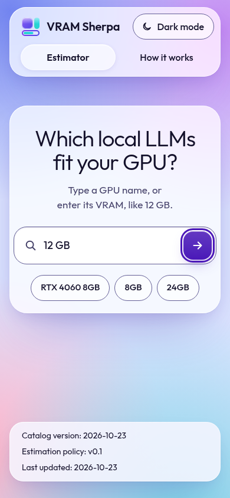</a></figure></div><p class="files">Mockup <code>docs/design/mockups/final-landing-focus-submit.html</code>. Renders <code>docs/design/final/landing-focus-submit-&lt;390|1280&gt;-&lt;light|dark&gt;.png</code>.</p></section><section class="state" id="results-from-landing"><div class="state-head"><h3>Where the box leads: <code>12 GB</code> on the results page</h3><p class="reqs">R-003, R-001, R-013, R-083</p></div><p class="blurb">The page <code>12 GB</code> produces (<code>/results?vram_gb=12&amp;context_tokens=2048</code>, from the running app): <code>Manual VRAM (12 GB)</code>, <code>12</code> in <code>Available VRAM (GB)</code>, <code>Search GPU</code> empty, <code>2k</code> selected, no filters. Its look is the approved results page. The only change is that <code>Clear</code> is now a link to <code>/</code>, drawn as the same secondary button. First 8 cards of 63.</p><div class="pair"><figure class="shot scroll"><figcaption>1280 px</figcaption><a href="final/results-from-landing-1280-light.png" target="_blank" rel="noopener">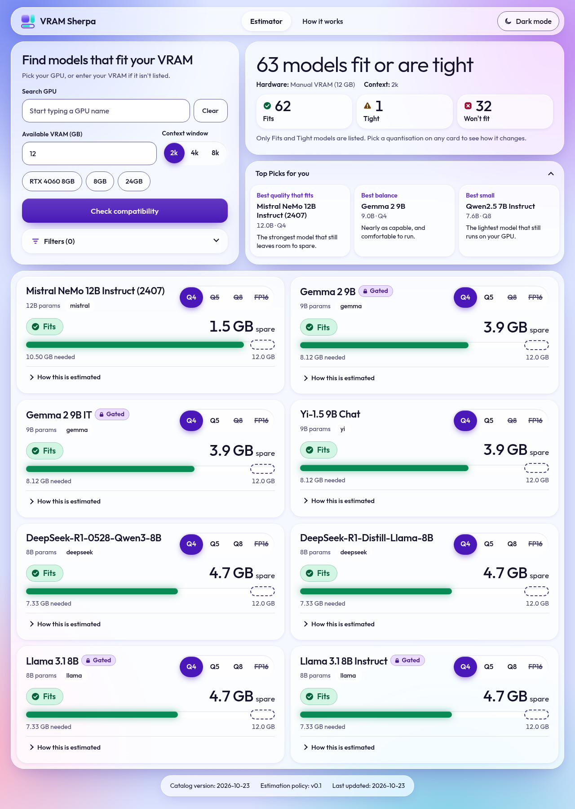</a></figure><figure class="shot scroll"><figcaption>390 px</figcaption><a href="final/results-from-landing-390-light.png" target="_blank" rel="noopener">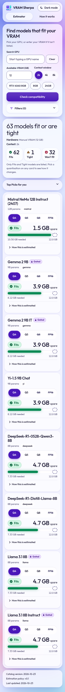</a></figure></div><p class="files">Mockup <code>docs/design/mockups/final-results-from-landing.html</code>. Renders <code>docs/design/final/results-from-landing-&lt;390|1280&gt;-&lt;light|dark&gt;.png</code>.</p></section></div></section>
<section><h2>Wording</h2><p class="blurb" style="margin-bottom:14px">All three are rewordable text (R-078). The submit name <code>Check compatibility</code>, the box name <code>Search GPU</code>, the chips and the footer stay word for word.</p><div class="table"><table><thead><tr><th>Where</th><th>Old</th><th>New</th><th>Note</th></tr></thead><tbody><tr><th scope='row'>Landing <code>h1</code> (<code>/</code> only)</th><td>Find models that fit your VRAM</td><td>Which local LLMs fit your GPU?</td><td><code>/results</code> keeps its form title.</td></tr><tr><th scope='row'>Help line (<code>/</code> only)</th><td>Pick your GPU, or enter your VRAM if it isn&#x27;t listed.</td><td>Type a GPU name, or enter its VRAM, like 12 GB.</td><td>Tells people the number is accepted. <code>/results</code> keeps the old line.</td></tr><tr><th scope='row'>Box placeholder (<code>/</code> only)</th><td>Start typing a GPU name</td><td>Your GPU, or its VRAM</td><td>Short enough to show whole at 390 px next to the arrow.</td></tr></tbody></table></div></section>
<section><h2>What QA can measure</h2><div class="table"><table><thead><tr><th>Check</th><th>Mockup</th><th>Note</th></tr></thead><tbody><tr><th scope='row'>Box width (the <code>#gpu_search</code> input)</th><td>344 px at 390 (needs 342), 754 px at 1280 (needs 560)</td><td>At 390 the pane keeps 6 px of padding so the box can reach 344. Anything that adds width to the pane&#x27;s padding or border breaks R-083&#x27;s 342.</td></tr><tr><th scope='row'>Box horizontal centre vs viewport centre</th><td>0.00 px off at both widths (needs within 2)</td><td></td></tr><tr><th scope='row'>Box vertical centre</th><td>L1: 416 px of 844 (49.2%) at 390; 428 px of 800 (53.5%) at 1280. L3: 360 (42.6%) and 382 (47.8%). Needs 35 to 65%</td><td>The pane is centred between header and footer, then lifted a little.</td></tr><tr><th scope='row'>Box, chips and submit without scrolling</th><td>Chips end at 510 of 844 (390) and 532 of 800 (1280); the page is exactly the viewport tall and 390 / 1280 wide in every state</td><td></td></tr><tr><th scope='row'>Submit control size</th><td>48 x 48 px at 390, 232 x 60 px at 1280</td><td>Both at least 44 px.</td></tr><tr><th scope='row'>Chips</th><td>44 px tall, three of them, one row at both widths</td><td></td></tr><tr><th scope='row'>Text contrast, landing states</th><td>Lowest 7.07:1 (light) and 8.28:1 (dark); 0 failures in 994 text boxes over 28 renders</td><td>Measured the way the overhaul was: backdrop replaced by its worst colour.</td></tr><tr><th scope='row'>Text inputs on <code>/</code></th><td>1; one <code>h1</code></td><td></td></tr><tr><th scope='row'>Focus on load</th><td>Box focused; ring 3 px solid</td><td>In the build this is the <code>autofocus</code> attribute (ADR-0012).</td></tr></tbody></table></div></section>
<section><h2>Decisions for you</h2><ol><li><strong>Wording of the greeting, help line and placeholder.</strong> Proposed in the table above. They are rewordable text (R-078); once you approve them they become the wording QA checks. Another option for the greeting: <code>What are you running it on?</code>, the one from your 24 October prototype. I chose a version that names the product&#x27;s job so a first-time visitor needs no other context.</li><li><strong>The <code>Example GPU</code> chip when the catalog is unseeded.</strong> Drawn dashed and inert, as ADR-0009 specifies, so the row still has three chips. A dead chip invites a tap that does nothing; the alternative is to leave it out and show two chips (R-083&#x27;s &quot;three chips&quot; would then need a note for L3). Say which you prefer.</li><li><strong>The submit control shows its words at desktop width and only an arrow on a phone.</strong> Its accessible name is <code>Check compatibility</code> in both. An arrow alone on desktop would work, but the words make the next step plain when the box is empty. Say if you would rather have the arrow only everywhere.</li></ol></section>
<section><h2>Notes</h2><ul class="plain"><li>The greeting sits inside the same glass pane as the box. On the bare background its contrast would be about 2.2:1 in the dark theme at the worst backdrop colour, below R-077&#x27;s 4.5:1, so it needs a pane behind it.</li><li><code>Clear</code> on <code>/results</code> is a link (ADR-0012), so a screen reader announces a link named <code>Clear</code>, not a button. It keeps the secondary-button look.</li><li>R-083 puts keyboard focus in the box on load. On Android phones that opens the on-screen keyboard at once and covers the chips; iOS Safari usually ignores autofocus. The mockups do not change for it.</li><li>Results-page states checked and unchanged: all 22 other approved states (results-gpu, results-manual-vram, results-gpu-ambiguous, results-gpu-notfound, results-errors, results-chips, results-filters-open, results-picks-hidden, results-tight-gated, why-closed, why-loading, why-loaded, empty-links, empty-inert, empty-mixed, unseeded, detail-gated, detail-ungated, detail-no-sources, detail-error, how-it-works, focus-states). Their text and look do not change because a box number is accepted: the <code>Search GPU</code> line, hints and placeholder on <code>/results</code> stay as approved. In those mockups the logo, <code>Estimator</code> and <code>Clear</code> still point at the old home mockup; that is a link, not a look.</li></ul></section>
</main>
<script>
(function () {
  var theme = 'light';
  function set(t) {
    theme = t;
    document.querySelectorAll('img[data-shot]').forEach(function (i) { i.src = i.dataset.shot.replace('%T', t); });
    document.querySelectorAll('.shot a').forEach(function (a) { var i = a.querySelector('img'); a.href = i.src; });
    document.getElementById('t-light').setAttribute('aria-pressed', String(t === 'light'));
    document.getElementById('t-dark').setAttribute('aria-pressed', String(t === 'dark'));
  }
  document.getElementById('t-light').addEventListener('click', function () { set('light'); });
  document.getElementById('t-dark').addEventListener('click', function () { set('dark'); });
})();
</script>
